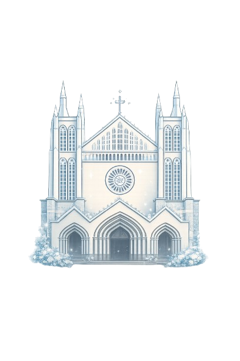
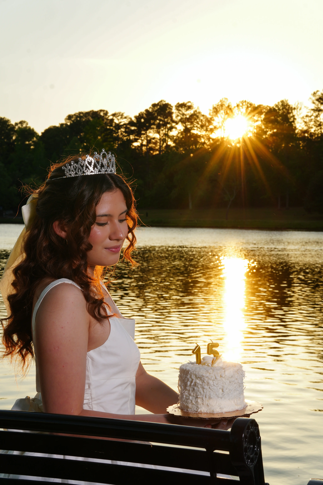
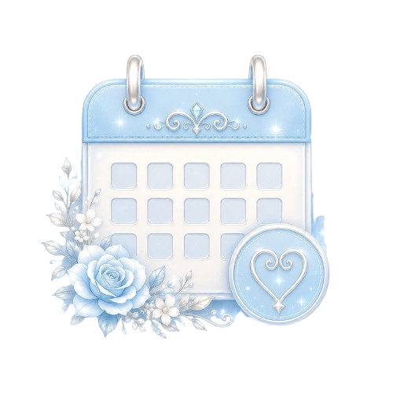
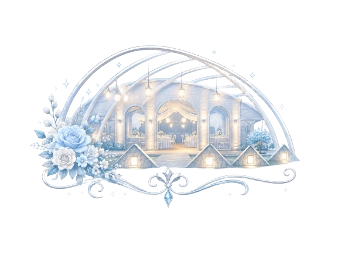
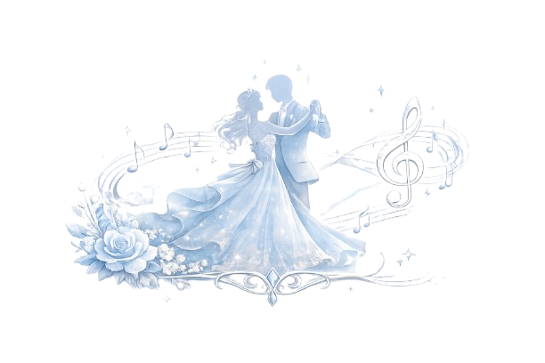
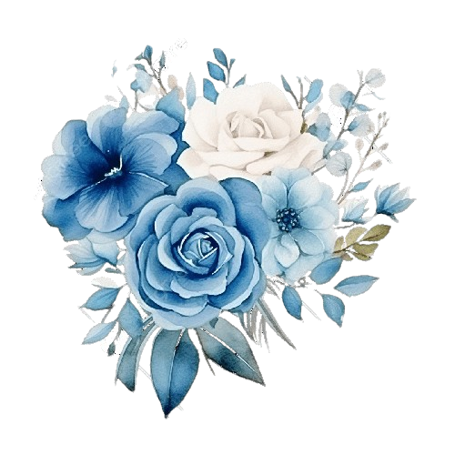
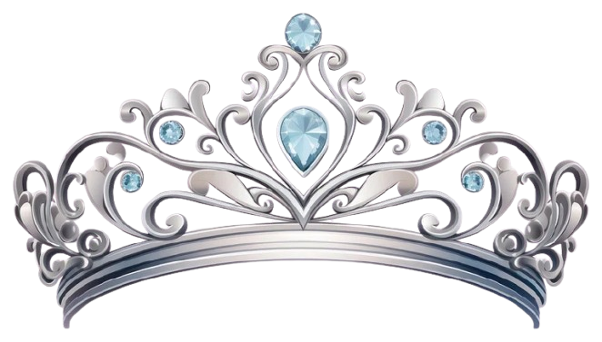

3:00 pm
Misa
En la Capilla de la Escuela Francisco Velazco Marañón
(como referencia frente al Colegio Yolinstli)

Mis XV años
18 de julio de 2026
Te invito a compartir conmigo la magia de mis XV años, una tarde llena de amor, alegría y recuerdos que guardaré por siempre.

Cada día falta menos
Acompáñanos

En la Capilla de la Escuela Francisco Velazco Marañón
(como referencia frente al Colegio Yolinstli)


Un momento especial para celebrar el sueño de Camila.
Con cariño
Juan Carlos García Ávila
&
Adhara Suárez Martínez
Ashley Morales Salas
&
Gaddiel De Vega Vázquez

Código de vestimenta
Agradecemos reservar el color azul para la quinceañera.
Sugerencia de regalo
Tu presencia es lo más importante. Si deseas tener un detalle, preferentemente lluvia de sobres.
Confirma tu asistencia
Camila XV • 18 de julio de 2026
Ayúdanos a preparar cada detalle confirmando si podrás acompañarnos en esta celebración tan importante.
Confirmar por WhatsAppMomentos

Con todo mi cariño
Será una alegría compartir contigo esta noche tan especial. Gracias por ser parte de mis recuerdos más bonitos.